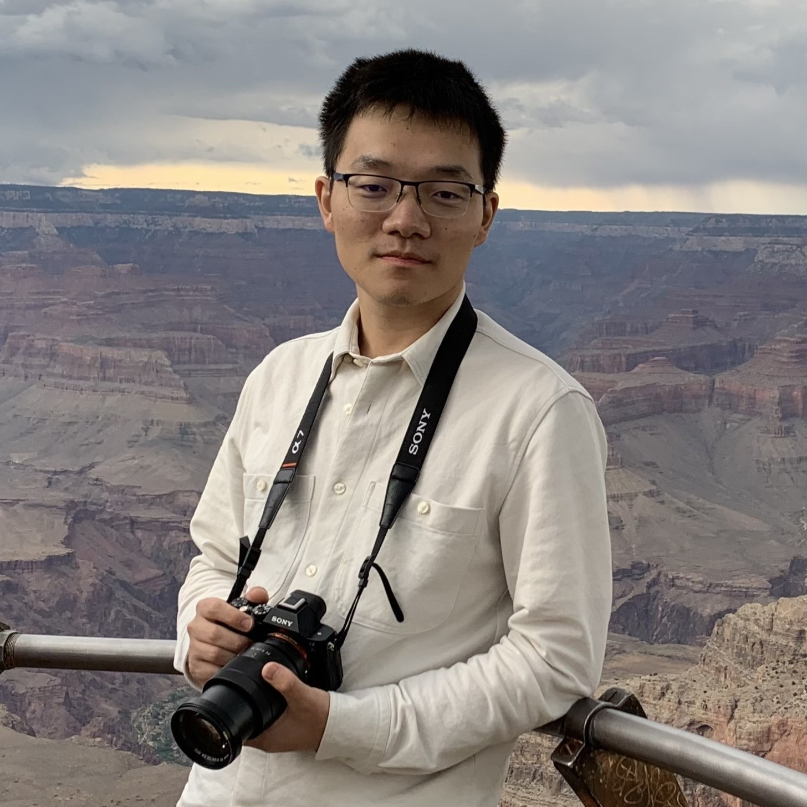

Jian Weng (翁健)

Assistant Professor
Building 1, 4414
KAUST, Thuwal, 23955-6900
Bio
Jian Weng is an Assistant Professor at KAUST's Computer Science.
His research interests lie on full-stack computing systems' design and implementation, including but not limited to
designing and analyzing accelerators, the accelerator-associated software-stacks as well as exploiting the potentials
of existing devices. His works have been recognized with one IEEE Micro Top Picks Honorable Mentions,
and one MICRO Best Paper Runner-up. Jian Weng earned his Ph.D. in Computer Science from UCLA in 2023,
advised by Prof. Tony Nowatzki.
Synthesys Lab
I am running Synthesys Lab at KAUST, focusing on full-stack computing system research (and education).
I am honored to work with the following amazing students:
- PhD Students:
- [2024 Fall] 🇨🇳Derui Gao (MS/PhD)
- [2025 Spring] 🇨🇳Wanning Zhang (PhD)
- [2025 Fall] 🇨🇳An Zhong (MS/PhD)
- [2026 Spring] 🇨🇳Hanzhi Hu (MS/PhD)
- [2026 Spring] 🇰🇿Ayazhan Kadessova (MS/PhD)
Publications
International Symposium on Computer Architecture (ISCA'26) 161/845
Guang Fan ,
Yi Chen ,
Lei Chen ,
Liang Kong ,
Chao Niu ,
Dian Jiao ,
Yilan Zhu ,
Geng Yang ,
Shengyu Fan ,
Xianglong Deng ,
Fangyu Zheng ,
Jian Weng ,
Yisong Chang ,
Meng Li ,
Shoumeng Yan ,
Mingzhe Zhang
International Symposium on Computer Architecture (ISCA'26) 161/845
Haibin Wu ,
Wenming Li ,
Zhihua Fan ,
Zirui Ma ,
Yuqun Liu ,
Tengfei Xia ,
Yanhuan Liu ,
Kunming Zhang ,
Xiaochun Ye ,
Dongrui Fan ,
Jian Weng
International Symposium on Computer Architecture (ISCA'26) 161/845
Jian Weng ,
Boyang Han ,
Derui Gao ,
Ruijie Gao ,
Wanning Zhang ,
An Zhong ,
Ceyu Xu ,
Jihao Xin ,
Yangzhixin Luo ,
Lisa Wu Wills ,
Marco Canini
Sihao Liu= ,
Jian Weng= ,
Dylan Kupsh ,
Atefeh Sohrabizadeh ,
Zhengrong Wang ,
Licheng Guo ,
Jiuyang Liu ,
Maxim Zhulin ,
Lucheng Zhang ,
Jason Cong ,
Tony Nowatzki
International Symposium on Microarchitecture (MICRO'22) 83/369
Best Paper Runner-up
International Symposium on High-Performance Computer Architecture (HPCA'22) 80/262
IEEE Micro Special Issue on Compiling for Accelerators IF=2.821
International Symposium on Code Generation and Optimization (CGO'21) 31/89
International Symposium on Computer Architecture (ISCA'20) 77/421
Selected as IEEE Micro Honorable Mentions in Computer Architecture 2021 12/120
International Symposium on High-Performance Computer Architecture (HPCA'21) 63/258
Best Paper Runner-up
International Symposium on High-Performance Computer Architecture (HPCA'20) 48/248
Computer Architecture Letters (CAL'19) IF=2.118
International Symposium on Microarchitecture (MICRO'19) 80/345
Selected as IEEE Micro Top Picks in Computer Architecture 2020
Parallel Architectures and Compilation Techniques (PACT'18) 36/126
Tutorial & Workshop
International Symposium on Microarchitecture (MICRO'22)
1st Workshop on Democratizing Domain-Specific Accelerators (WDDSA @MICRO'22)
Workshop on Languages, Tools, and Techniques for Accelerator Design (LATTE @ASPLOS'21)
DSAGEN: Democratizing Decoupled Spatial Architecture Research
International Symposium on Microarchitecture (MICRO'20)
Service

{kind=link}